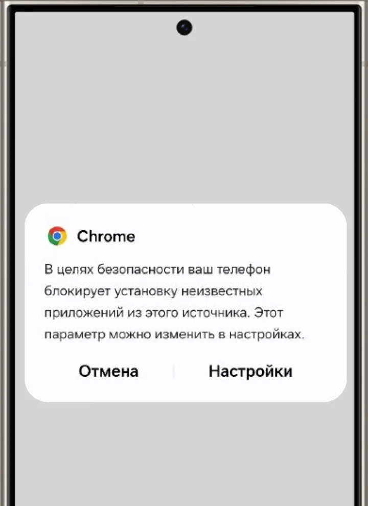
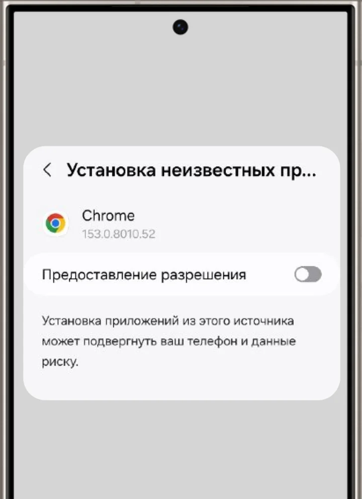
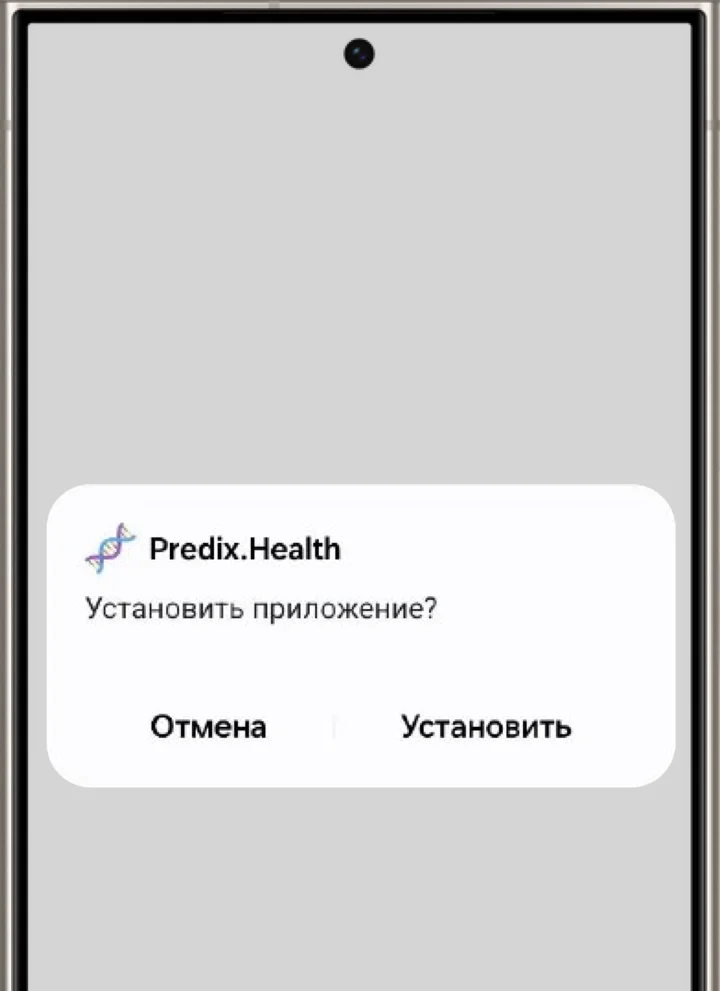
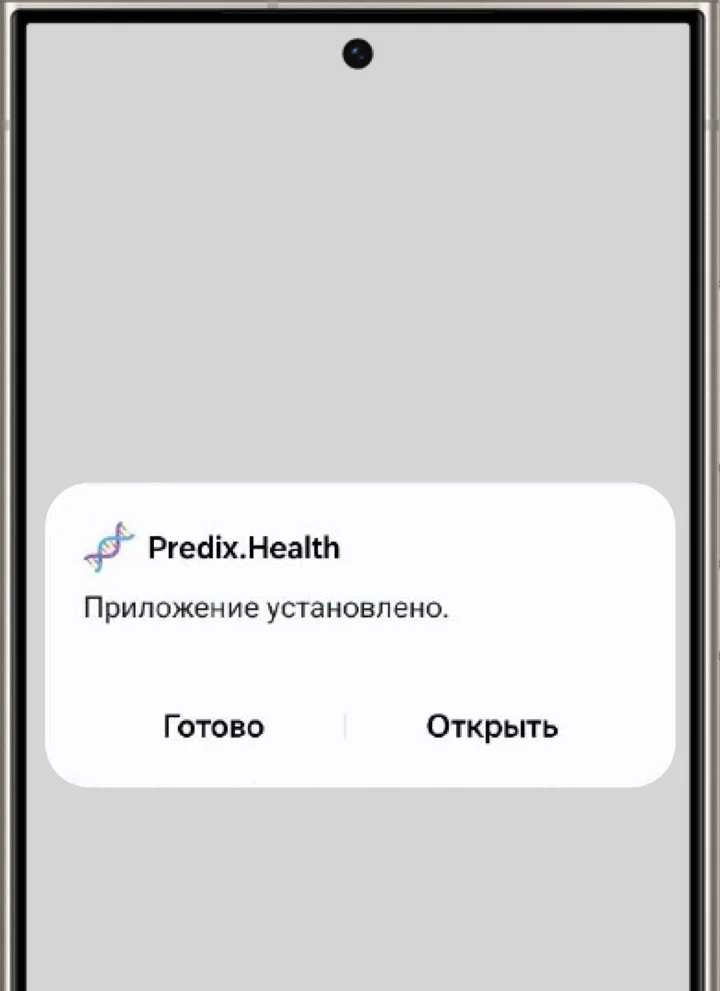

Как установить «Предикс.Здоровье» на Android
Пока приложение устанавливается APK-файлом
После перехода в магазин или настройки вернитесь к этой странице, чтобы продолжить. Внешний вид экранов и названия кнопок могут отличаться
-
Установите приложение
После начала установки Google выдаст автоматическое предупреждение. Не пугайтесь, жмите кнопку «Настройки»

-
Выдайте разрешение
Откроется системный экран установки неизвестных программ. Нажмите кнопку «Предоставление разрешения»

-
Повторите установку
Для этого отсканируйте QR-код ещё раз или найдите установочный .apk файл в загрузках и нажмите на него

-
Всё готово, получилось!
Вы прекрасны, теперь можно зарегистрироваться в приложении и сделать шаг навстречу своему здоровью
